CGI showcase 2023
SUDANIM Tattoo Showcase Part 2
- Tattoo designs
- SUDANIM
- Direction, animation and editing
- Rok Pat
- Original music
- Ilya Onchev (The2iO)
The second showcase places SUDANIM’s intricate tattoo designs on digital figures inside atmospheric, Japan-inspired settings. Rok created the presentation with Unreal Engine 5, Blender and Adobe Substance Painter.
The2iO’s original score draws on Japanese musical traditions and uses elements from Sakura (Cherry Blossoms). The interplay of lighting, motion and music gives each design its own moment.

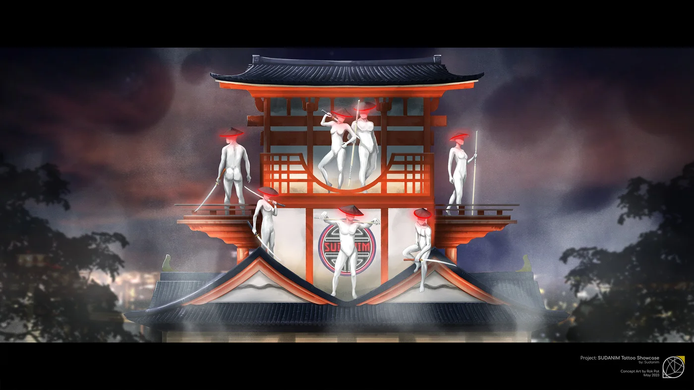
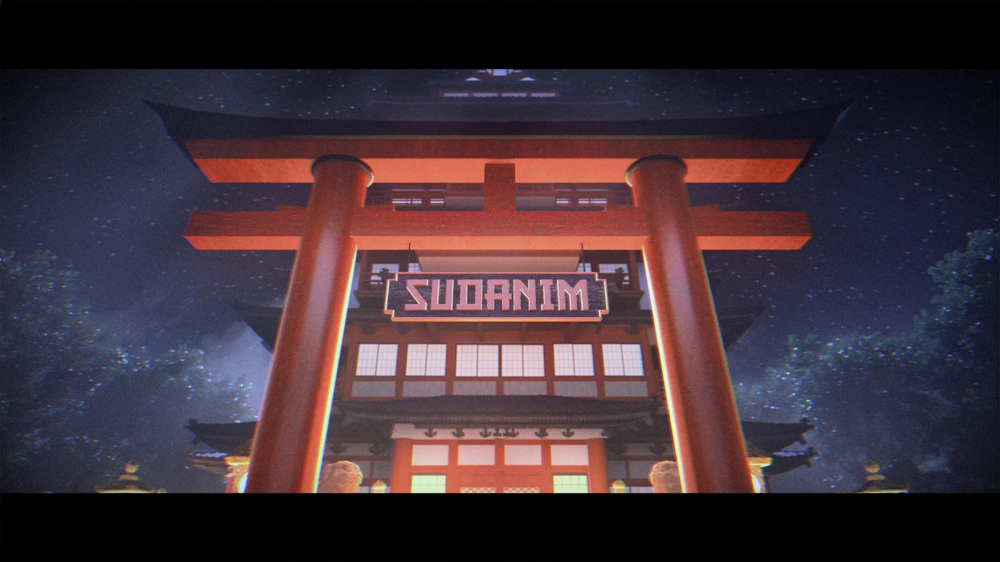
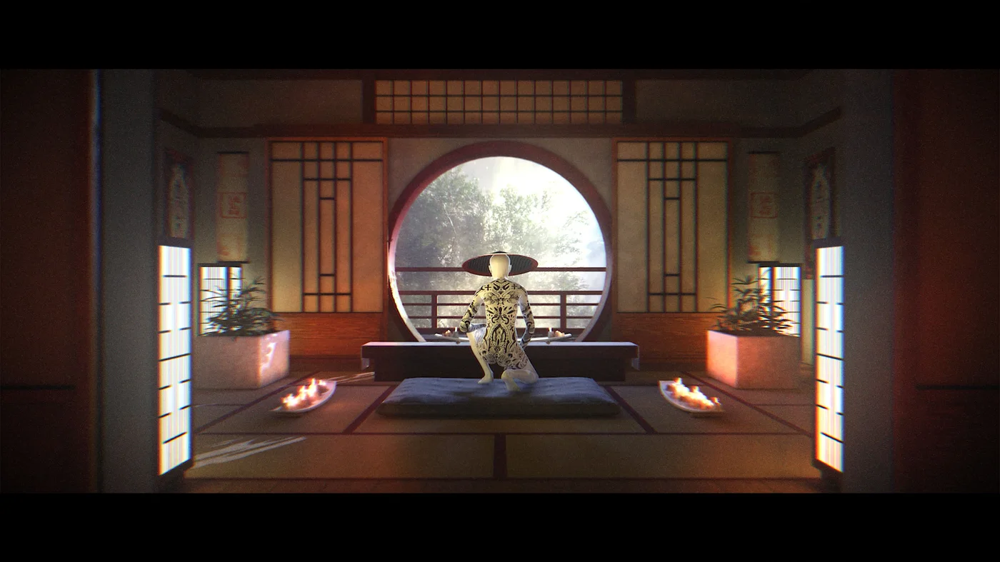
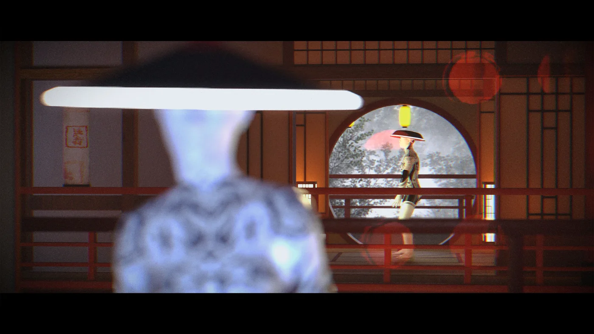
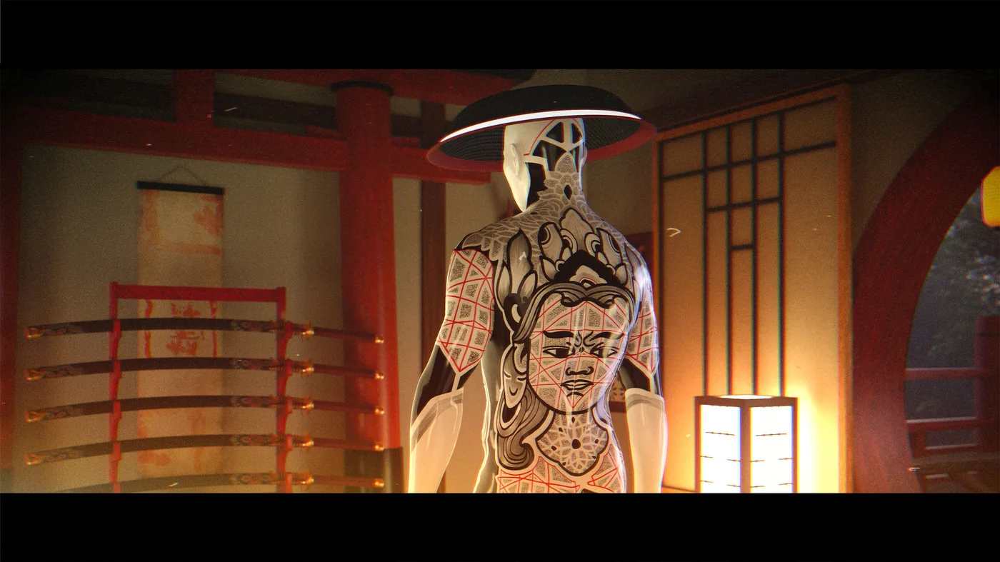
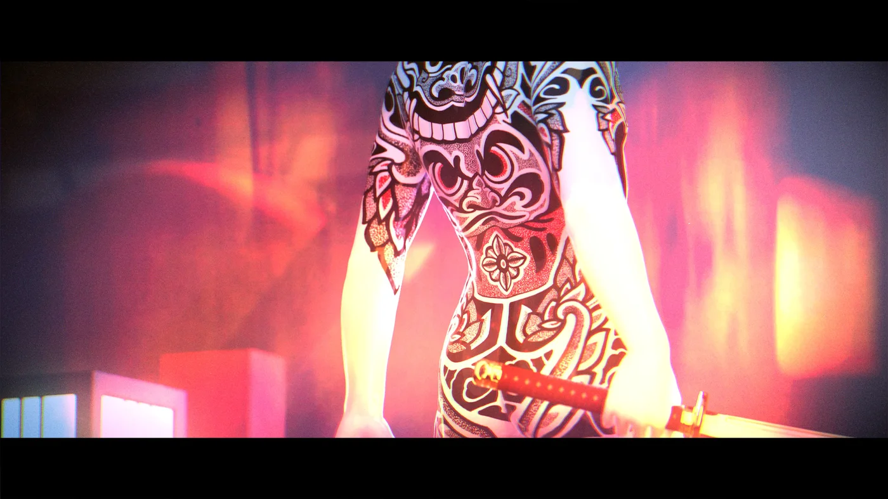
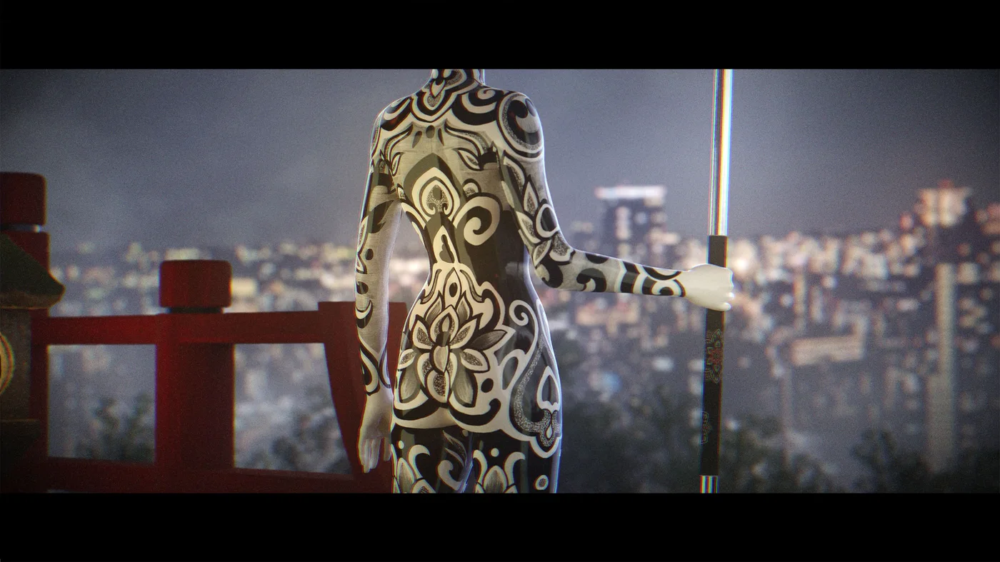
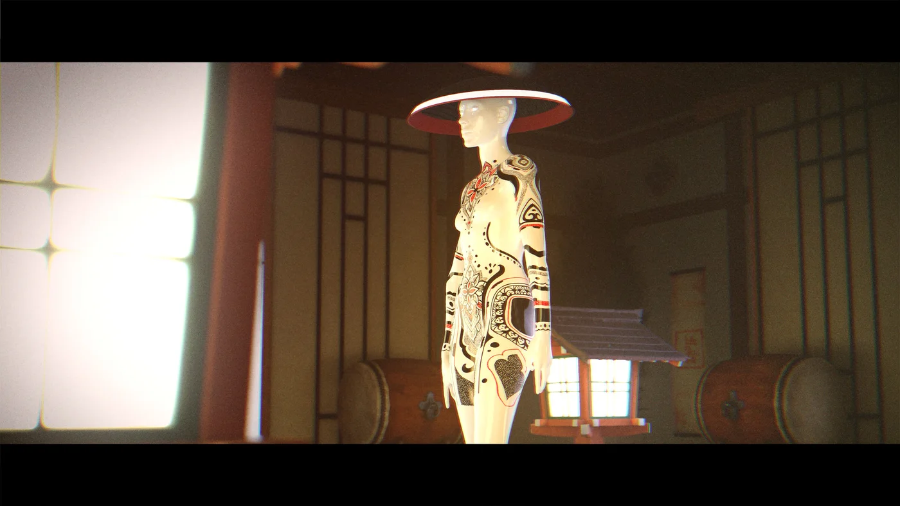
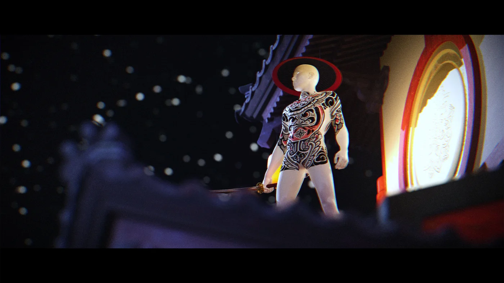
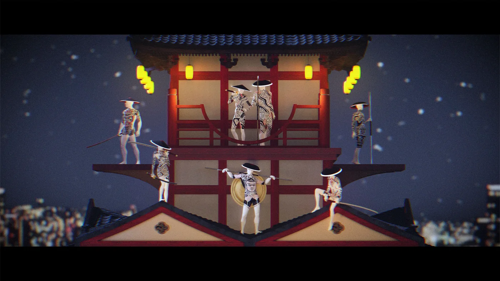
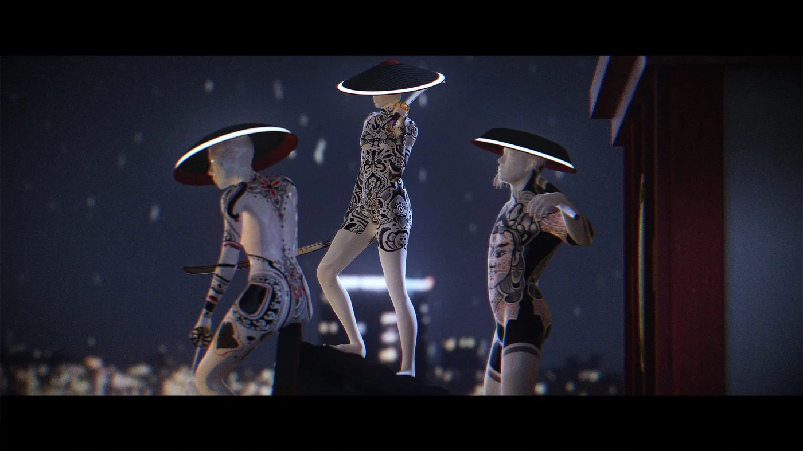